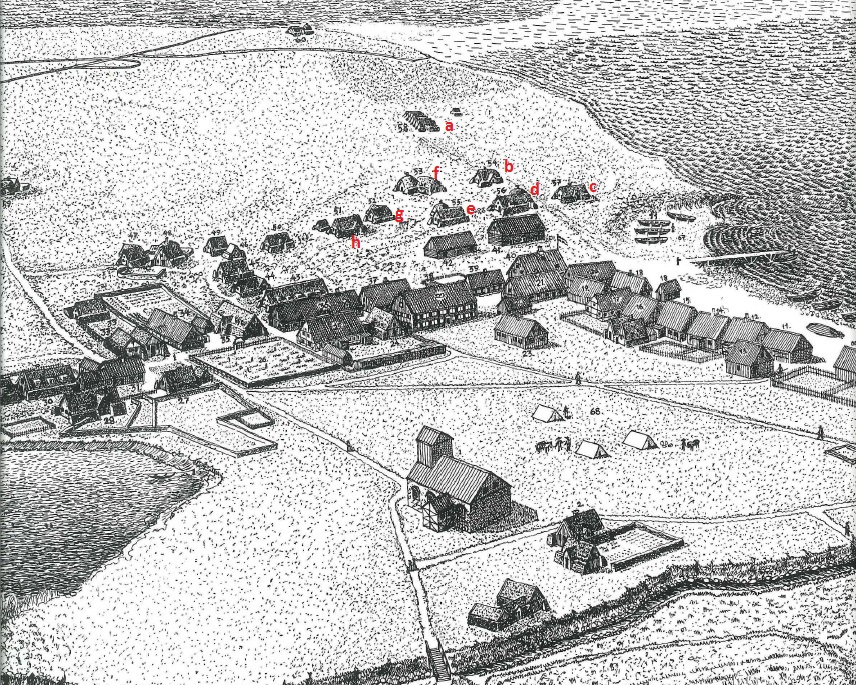
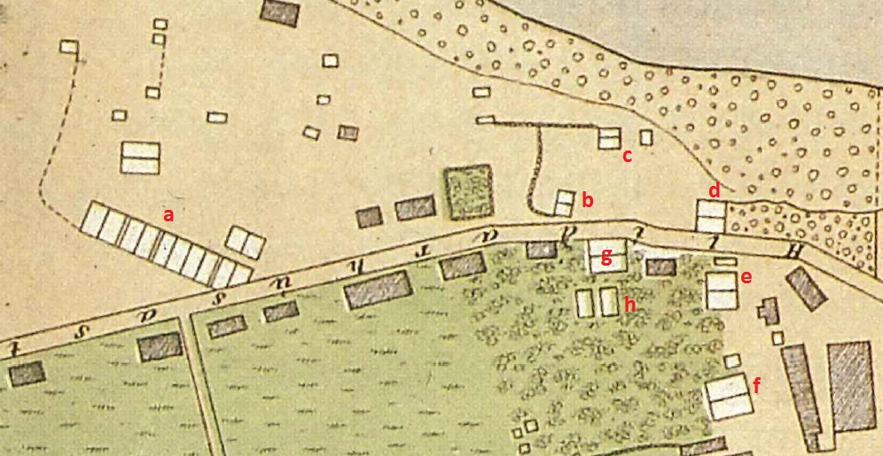
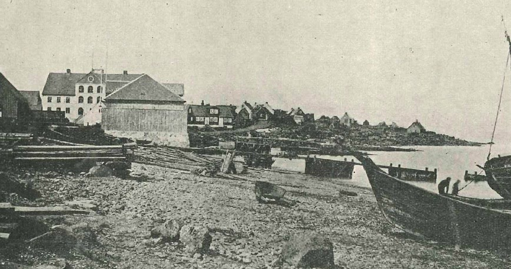
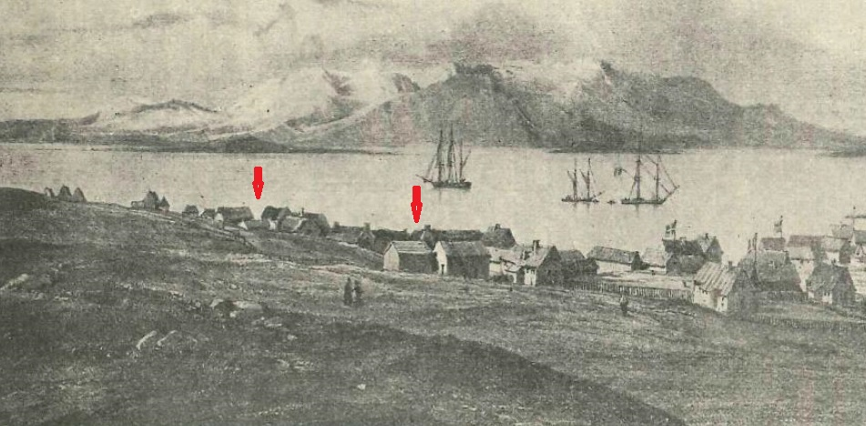

1801
Teikning Aage Olsen Aanum af Kvosinni og vesturhluta Reykjavíkur byggð á kortum frá 1801 og öðrum samtímaheimildum. Torfbæir þar sem nú er norðurhluti Grjótaþorps og við Vesturgötu eru merktir með bókstöfum:
- a: Hlíðarhús
- b: Sjóbúð
- c: Þorfinnsbær
- d: Marteinsbær (oftar nefndur Borgarabær)
- e: Fabersfjós
- f: Helgakot (oftar nefnt Vigfúsarkot)
- g: Hjallakot (oftar nefndur Arabær)
- h: Hákonarbær
Taka ber staðsetningu torfbæja á teikningunni með ákveðnum fyrirvara. Til að mynda sést móta fyrir Hlíðarhúsastíg, síðar Vesturgötu, og Þorfinnsbær er sýndur norðan stígsins sem stenst ekki. Einnig var fjarlægðin milli Arabæjar og Hákonarbæjar meiri en teikningin sýnir.

Kvosin og vesturhluti Reykjavíkur1801

Kort eftir Svein Sveinsson1876
1876
Hluti úr korti Sveins Sveinssonar frá 1876. Sýnir torfbæi við Hlíðarhúsastíg, síðar Vesturgötu. Torfbæirnir eru: a:Hlíðarhús, b:Merkisteinn, c:Klettakot, d:Helluland, e:Hóll, f:Vigfúsarkot, g:Gróubær, h:Dúkskot
um 1890
Horft til vesturs úr fjörunni hjá Grófinni um 1890. Stóra húsið vinstra megin er Glasgow. Við hliðina á er Sjóbúð sem er reisulegt timburhús byggt var 1859 í stað torfbæjar með sama nafni. Hægra megin sjást tómthúsbýli norðan við Hlíðarhúsastíg, núverandi Vesturgötu. Á þessu svæði voru allnokkrir torfbæir um miðja 19. öld. Þeir voru auk Sjóbúðar, Hóll, Helluland, Merkisteinn, Klettakot og Jafetsbær. Dúkskot og Gróubær voru á sömu slóðum við Garðastræti.

Horft til vesturs úr fjörunni hjá Grófinnium 1890

Reykjavík séð frá Hólavallatúnimiðja 19. öld
um miðja 19. öld
Teikning af Reykjavík frá Hólavallatúni. Örin vinstra megin bendir á torfbæi við Vesturgötu. Örin hægra megin bendir á torfbæi í Grjótaþorpi. Ætla má að þessi teikning sé frá miðri 19. öld.